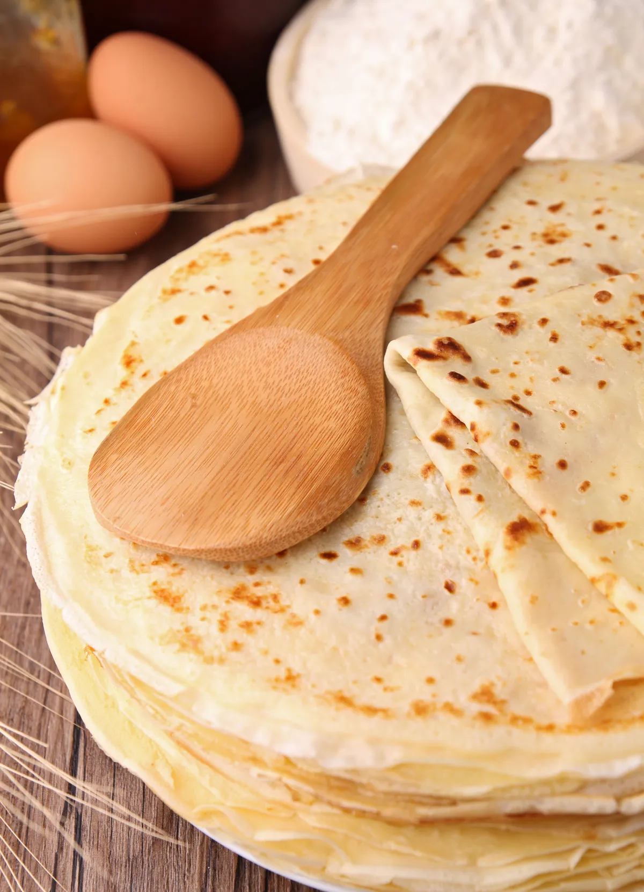
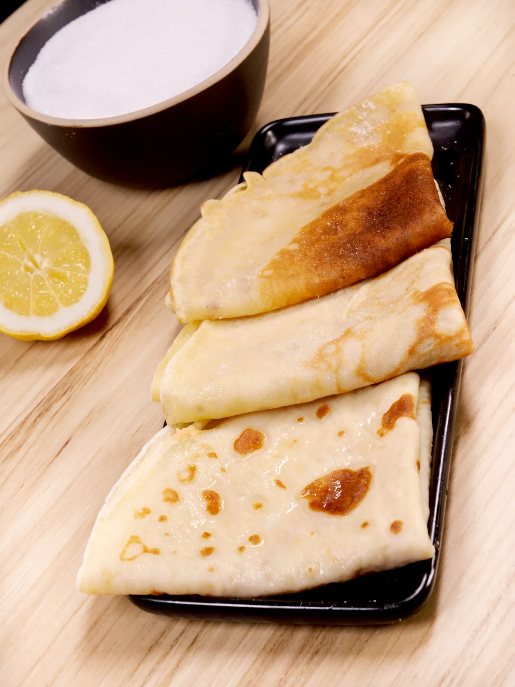

Pâte à crêpes simple
Selon nos informations, cette recette est compatible avec le régime suivant : végétarien
TEMPS TOTAL : 17 MIN

Ingrédients
- • 5 oeufs
- • 500g de farine
- • 1 litre de lait demi-écrémé
- • 3 cuillères à soupe d'huile
- • 1/2 verres de bière
Préparation
-
Etape 1 :
Dans un saladier verser la moitié de la farine, puis rajouter les oeufs un à un, rajouter ensuite un peu de lait puis de la farine puis à nouveau du lait et ainsi de suite. -
Etape 2 :
Enfin rajouter l'huile et la bière. -
Etape 3 :
Laisser reposer 1 heure, votre pâte est prête.